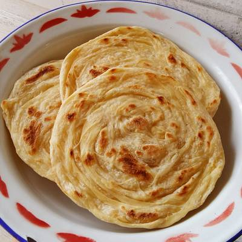
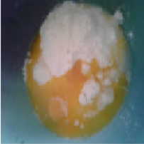
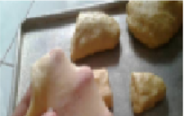

Resep Kue Maryam

Bahan-bahan :
- 250 gr tepung terigu
- 1 butir telur
- 3 sdm margarin, lelehkan
- 100 ml air hangat
- 2 sdm susu bubuk(optional)
- 1/2 sdt garam
- margarin leleh untuk olesan
- minyak untuk merendam
Langkah-langkah :
- Campur semua bahan roti jadi satu

- uleni sampai kalis jangan takut jika adonan lengket, lumuri sesekali dengan tepung, uleni terus sampai adonan kalis

- Kalisnya adonan tidak sekalis adonan roti, kira-kira seperti pada gambar dibawah ini.
